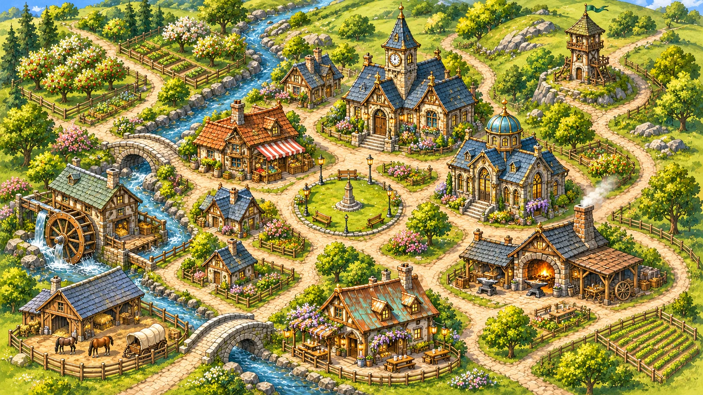

Tokens
12.4M
↑ 8.3%

AI Orchestration Village
Orchard Vale Command Center
Many Agents, One Quest.
Context
78%
512K / 656K
Compute
62%
24.8 / 40 vCPU
Risk
Low
Score 18/100
Active Agents
23 / 30
Healthy
May 18, 2025
10:42 AM
18°C · Sun & Showers
Quest Queue
Village Overview
8 Districts
1:2400 · 100%
Orchestrator HQ
Town Hall
- Active Agents
- 1
- Orchestration Load
- 62%
- Queue Depth
- 6
- Stationed
- Bramble Badger
Central council coordinating active quest routing, priority escalation, and guild load balancing.
Guild Roster
6 OnlineVillage Chronicle
1 Alert
| Time | Type | Message | Source |
|---|
All clear on the watch
No active alerts remain in this filter. The watermill gears and watchtower lanterns are running steady.
Today's Wisdom
“A well-orchestrated village turns many hands toward one worthy quest.”
Pipeline Overview
Healthy-
Code
 Ready
Ready
- Build 5/5
- Test 5/5
- Scan 5/5
- Deploy Staging 2/2
- Deploy Prod Pending